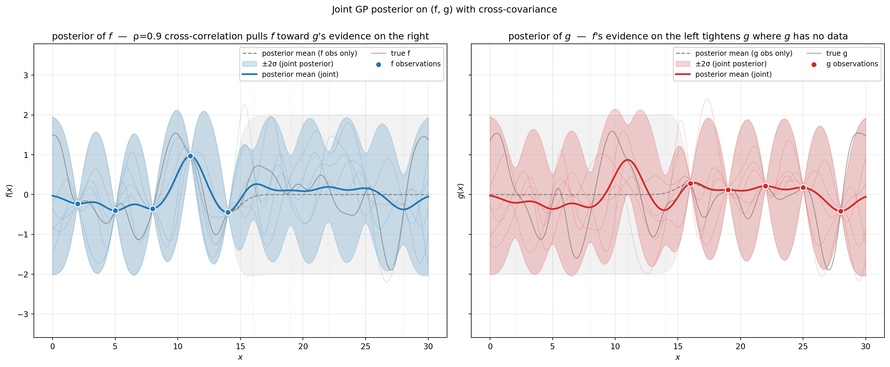

Bayesian Optimization 第2章
2026年04月27日
regmonkey_index:
title_fontsize: 1.1em
bullet_fontsize: 0.9em
children:
- title: 1. ガウス過程の定義
description:
- 任意有限部分集合の周辺分布が <strong>多変量正規</strong>となる確率過程
- 平均関数 $\mu$ と共分散関数 $K$ で <strong>完全に指定</strong>される
width: [38, 62]
- title: 2. Exact観測下の事後 GP
description:
- 観測 $\mathcal{D}=(\mathbf{x},\boldsymbol{\phi})$ で事後 GP は <strong>Cloased form</strong>で書ける
- 観測点で <strong>事後分散はゼロ</strong>，平均は観測値を補間する
width: [38, 62]
- title: 3. 加法ガウスNoise下の事後 GP
description:
- $\mathbf{y}=\boldsymbol{\phi}+\boldsymbol{\varepsilon}$ では $\boldsymbol{\Sigma}\to\boldsymbol{\Sigma}+\mathbf{N}$ に置換するだけ
- SN 比に応じて観測の影響が <strong>連続的に減衰</strong>
width: [38, 62]
- title: 4. 事後モーメントの解釈
description:
- 事後平均は <strong>z-score × 相関 $\rho$</strong> による更新公式で書ける
- 事後標準偏差は $\rho$ にのみ依存（観測値には依存しない）
width: [38, 62]
- title: 5. Coding Example
description:
- 結合 GP で $f$ と $g$ の事後を <strong>NumPy で同時推論</strong>する実装
- $K_{fg}=0.9K$ のクロス共分散経由で <strong>$g$ の観測が $f$ の事後も update</strong>
width: [38, 62]1. ガウス過程の定義
2. Exact観測下の事後 GP
3. 加法ガウスNoise下の事後 GP
4. 事後モーメントの解釈
5. Coding Example
任意の有限部分集合に対して周辺分布が多変量正規となる確率過程として定義される
Definition：ガウス過程
関数 \(f\colon \mathcal{X} \to \mathbb{R}\) 上の確率過程 \(p(f) = \mathcal{GP}(f;\mu, K)\) がガウス過程であるとは，
が存在して，任意の有限点列 \(\mathbf{x}=(x_1,\dots,x_n)\subset\mathcal{X}\) に対し関数値ベクトル \(\boldsymbol{\phi}=f(\mathbf{x})\) が次を満たすことをいう：
\[ p(\boldsymbol{\phi} \mid \mathbf{x}) \;=\; \mathcal{N}(\boldsymbol{\phi}; \boldsymbol{\mu}, \boldsymbol{\Sigma}), \qquad \boldsymbol{\mu} = \mu(\mathbf{x}),\ \ \boldsymbol{\Sigma} = \operatorname{cov}[\boldsymbol{\phi}; \vert \mathbf{x}] = K(\mathbf{x}, \mathbf{x}). \]
二乗指数カーネルを例に，距離 \(|x-x'|\) と相関の関係を確認する
カーネルの設計
サンプル経路の振る舞い
1. ガウス過程の定義
2. Exact観測下の事後 GP
3. 加法ガウスNoise下の事後 GP
4. 事後モーメントの解釈
5. Coding Example
多変量正規の自己共役性により，事後過程もガウス過程となる
補間性
影響範囲
1. ガウス過程の定義
2. Exact観測下の事後 GP
3. 加法ガウスNoise下の事後 GP
4. 事後モーメントの解釈
5. Coding Example
\(\mathbf{y} = \boldsymbol{\phi} + \boldsymbol{\varepsilon}\), \(\boldsymbol{\varepsilon} \sim \mathcal{N}(\mathbf{0},\mathbf{N})\) のとき，\(\boldsymbol{\Sigma} \to \boldsymbol{\Sigma}+\mathbf{N}\) に置換するだけで事後公式が成立
Noise観測モデル
事後 GP の更新公式
\[ \begin{aligned} \mu_{\mathcal{D}}(x) &= \mu(x) + K(x,\mathbf{x})(\boldsymbol{\Sigma}+\mathbf{N})^{-1}(\mathbf{y}-\boldsymbol{\mu}) \\ K_{\mathcal{D}}(x,x') &= K(x,x') - K(x,\mathbf{x})(\boldsymbol{\Sigma}+\mathbf{N})^{-1}K(\mathbf{x},x') \end{aligned} \]
実務でよく使う2つのNoiseモデル
1. ガウス過程の定義
2. Exact観測下の事後 GP
3. 加法ガウスNoise下の事後 GP
4. 事後モーメントの解釈
5. Coding Example
スカラ観測で事後の動きを分解すると，事前モーメントと観測の「驚きの度合い」に分かれる
3 つの極端ケース
ベクトル観測への一般化
観測値そのものは事後分散に影響を与えない
実務的含意
1. ガウス過程の定義
2. Exact観測下の事後 GP
3. 加法ガウスNoise下の事後 GP
4. 事後モーメントの解釈
5. Coding Example
\(f\) を直接観測する点と，\(g\)（関数変換を噛ませた別関数）を観測する点が異なる場面を扱う
\[ p(f, g) = \mathcal{GP}\!\left(\begin{bmatrix}f\\g\end{bmatrix};\,\begin{bmatrix}0\\0\end{bmatrix},\,\begin{bmatrix}K & K_{fg}\\ K_{gf} & K\end{bmatrix}\right),\qquad K_{gf}(x,x') = K_{fg}(x',x) \]
ねらい
結合 GP の事後は，多変量正規の条件付き分布の公式 (2.10) を観測ベクトル \(\mathbf{a}=[\boldsymbol{\phi};\boldsymbol{\gamma}]\) にそのまま適用するだけ
Keypoiints

直接観測のない領域でも，cross-covariance 経由で belief が引き締まる：これが結合 GP の本質
\(f\) の事後 \(p(f \mid \mathcal{D})\)
\(g\) の事後 \(p(g \mid \mathcal{D})\)
Regmonkey Presentation. ©Ryo Nakagami. All rights reserved.